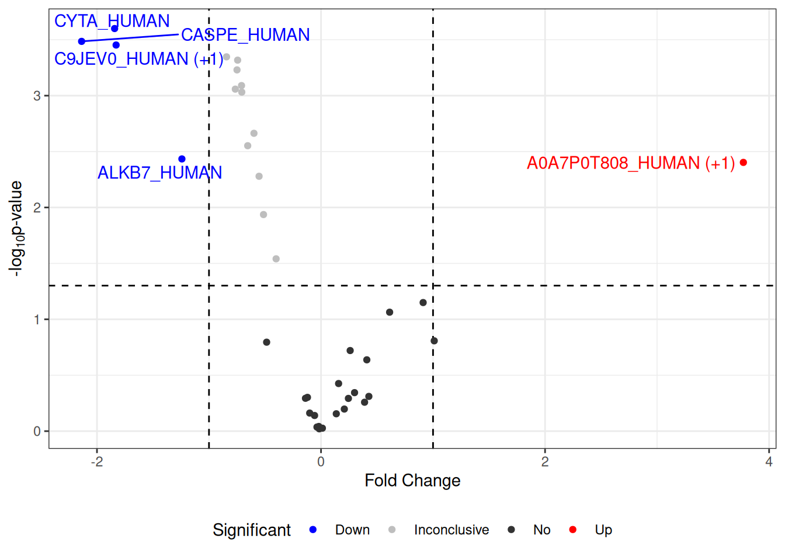
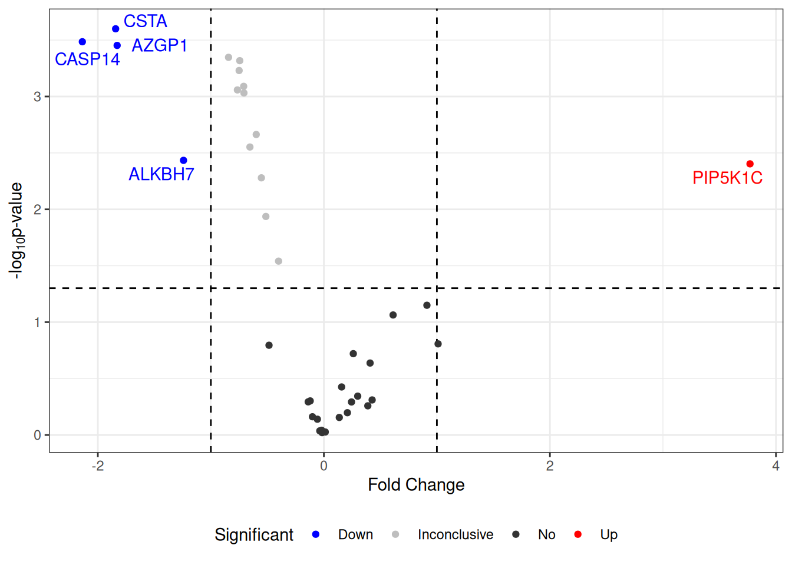
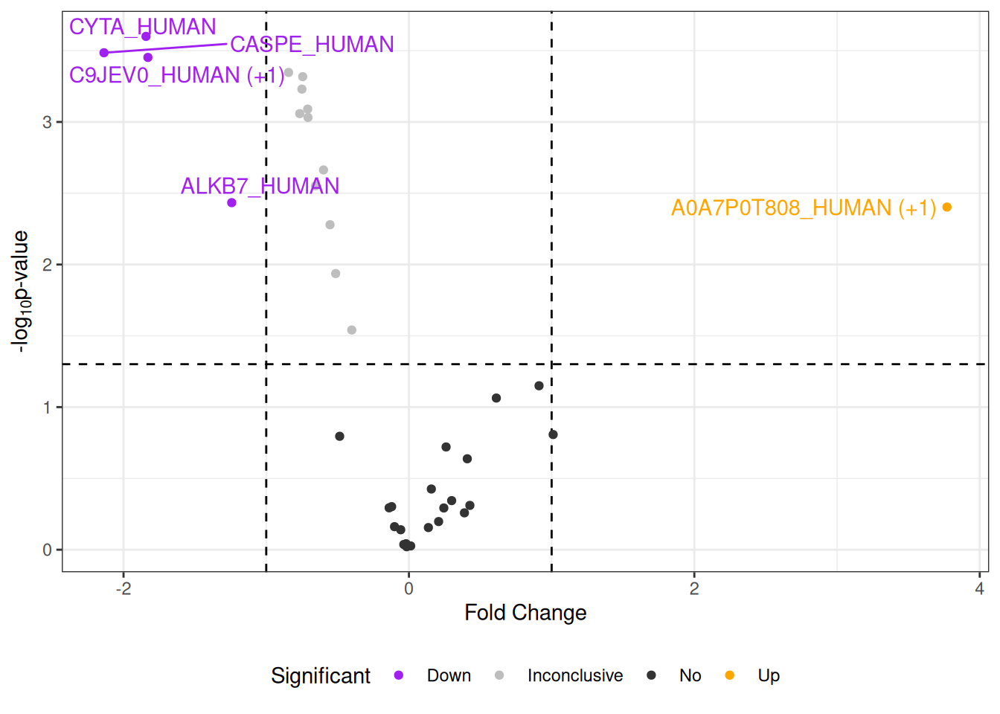
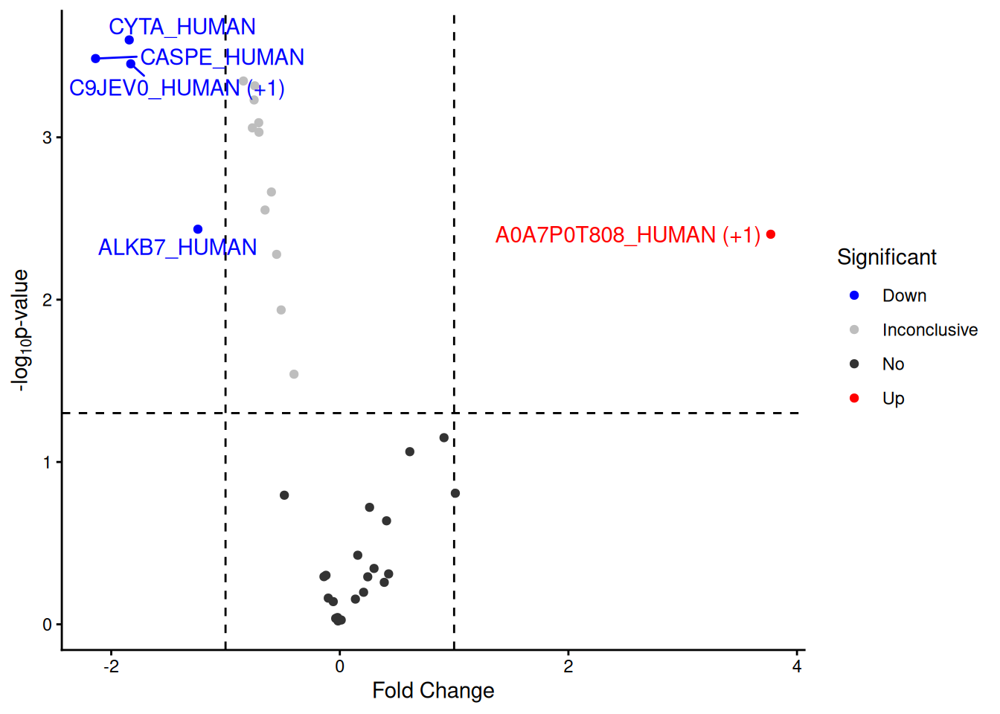
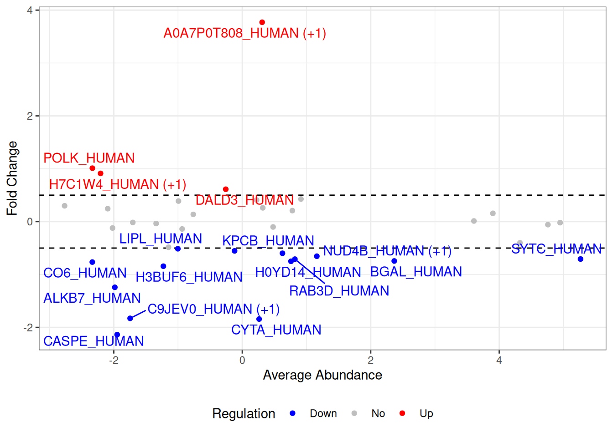
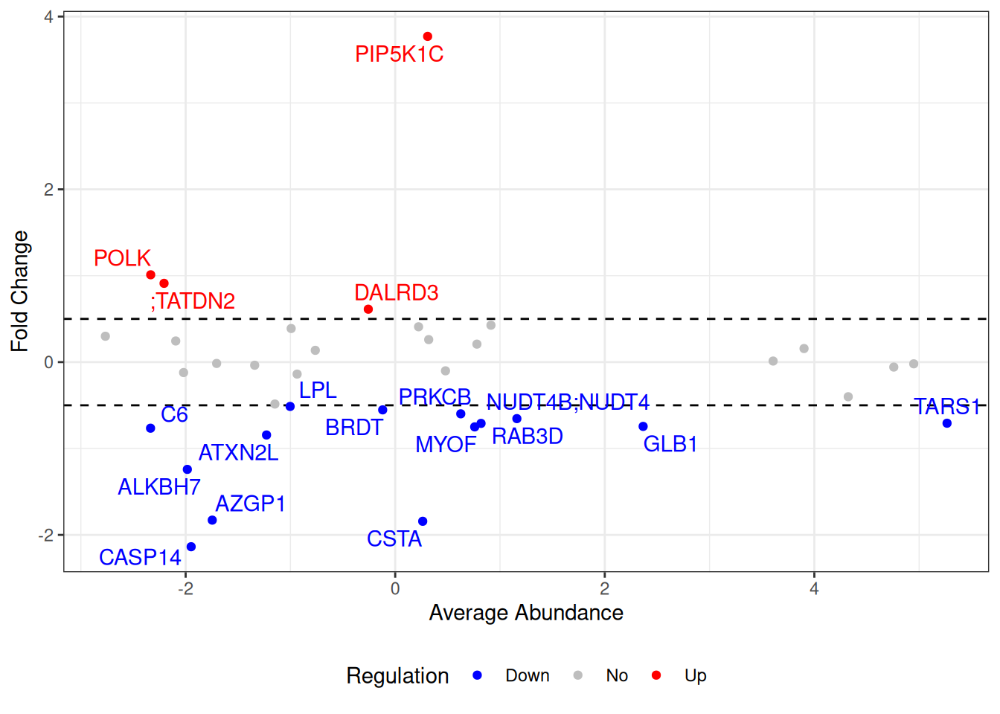
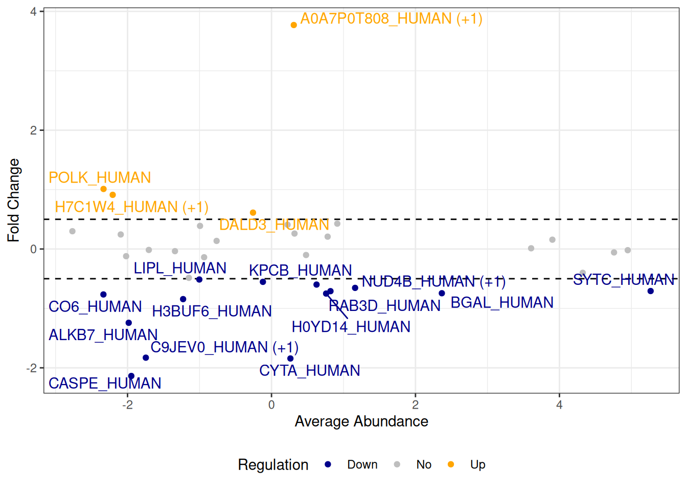
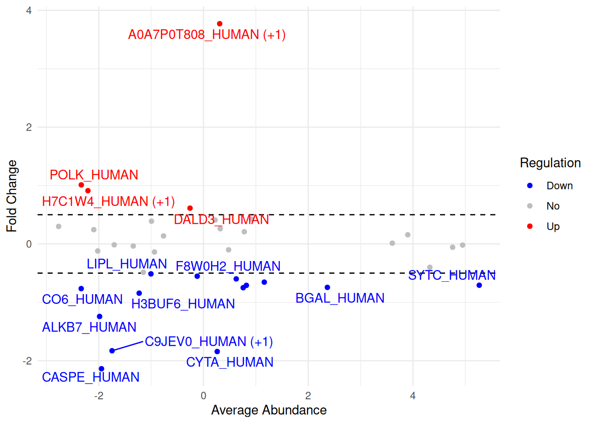

## load R package
library(msDiaLogue)
## preprocessing
fileName <- "../inst/extdata/Toy_Spectronaut_Data.csv"
dataSet <- preprocessing(fileName,
filterNaN = TRUE, filterUnique = 2,
replaceBlank = TRUE, saveRm = TRUE)
## transformation
dataTran <- transform(dataSet, logFold = 2)
## annotation-based filtering
dataFiltAnno <- filterOutIn(dataTran, listName = "ALBU_BOVIN",
removeList = TRUE, saveRm = TRUE)
## normalization
dataNorm <- normalize(dataFiltAnno, normalizeType = "median")
## data-driven filtering
dataFilt <- filterNA(dataNorm, minProp = 0.51, by = "cond", saveRm = TRUE)
## imputation
dataImput <- impute.min_local(dataFilt)
## analysis
anlys_modt <- analyze.mod_t(dataImput, ref = "50pmol")
anlys_ma <- analyze.ma(dataImput, ref = "50pmol")Many users have expressed a desire to customize msDiaLogue plots. To address this, we will provide guidelines on how to modify ggplot objects generated by msDiaLogue to align with the visual standards.
For R beginners, R for Data Science (Wickham, Çetinkaya-Rundel, and Grolemund 2023) is a fantastic resource, available online at https://r4ds.hadley.nz/. For users particularly interested in data visualization, ggplot2: Elegant Graphics for Data Analysis (Wickham 2016), available at https://ggplot2-book.org/, is highly recommended.
The following is the preliminary to generate the default visualization in msDiaLogue:
Volcano plot
## default volcano
visualize.volcano(anlys_modt$`100pmol-50pmol`, P.thres = 0.05, F.thres = 1)
#> Warning: Removed 32 rows containing missing values or values outside the scale range
#> (`geom_text_repel()`).
Change labels of proteins
The following code is shown to demonstrate how to replace the default labels in the volcano plot with gene or protein names, using additional information.
volcano <- visualize.volcano(anlys_modt$`100pmol-50pmol`,
P.thres = 0.05, F.thres = 1)
## change labels of proteins
library(dplyr)
volcano[["data"]] <- volcano[["data"]] %>%
## change the default labels from accessions to gene/protein names
mutate(Label = ifelse(is.na(Label), Label, PG.Genes))
volcano
#> Warning: Removed 32 rows containing missing values or values outside the scale range
#> (`geom_text_repel()`).
Change colors
To customize the colors in your volcano plot, you can use the function ggplot_build() from ggplot2. This allows you to specify custom colors for different significance levels in the output plot.
volcano <- visualize.volcano(anlys_modt$`100pmol-50pmol`,
P.thres = 0.05, F.thres = 1)
library(ggplot2)
new <- ggplot_build(volcano)
new[["plot"]][["scales"]][["scales"]][[1]][["palette.cache"]] <-
c(Down = "purple", Up = "orange", Inconclusive = "gray", No = "gray20")
new$plot
#> Warning: Removed 32 rows containing missing values or values outside the scale range
#> (`geom_text_repel()`).
Change themes
To modify the appearance of your volcano plot, you can completely override the current theme using ggplot2’s theme_*() functions. Themes control the overall look of the plot, including the background, gridlines, and text.
volcano <- visualize.volcano(anlys_modt$`100pmol-50pmol`,
P.thres = 0.05, F.thres = 1)
library(ggplot2)
## use a classic theme
volcano + theme_classic()
#> Warning: Removed 32 rows containing missing values or values outside the scale range
#> (`geom_text_repel()`).
MA plot
## default MA
visualize.ma(anlys_ma$`100pmol-50pmol`, M.thres = 0.5)
#> Warning: Removed 19 rows containing missing values or values outside the scale range
#> (`geom_text_repel()`).
Change labels of proteins
To change the labels on your plot from accession numbers to gene or protein names, follow these steps:
ma <- visualize.ma(anlys_ma$`100pmol-50pmol`, M.thres = 0.5)
## change labels of proteins
library(dplyr)
ma[["data"]] <- ma[["data"]] %>%
## change the default labels from accessions to gene/protein names
mutate(Label = ifelse(is.na(Label), Label, PG.Genes))
ma
#> Warning: Removed 19 rows containing missing values or values outside the scale range
#> (`geom_text_repel()`).
Change colors
To adjust the colors in your MA plot, you can customize the color scheme to better highlight different categories of significance. Here is how you can modify the colors in the plot:
ma <- visualize.ma(anlys_ma$`100pmol-50pmol`, M.thres = 0.5)
library(ggplot2)
new <- ggplot_build(ma)
new[["plot"]][["scales"]][["scales"]][[1]][["palette.cache"]] <-
c(Down = "darkblue", No = "gray", Up = "orange")
new$plot
#> Warning: Removed 19 rows containing missing values or values outside the scale range
#> (`geom_text_repel()`).
Change themes
To alter the visual style of your MA plot, you can apply a different theme using ggplot2’s theme functions.
ma <- visualize.ma(anlys_ma$`100pmol-50pmol`, M.thres = 0.5)
library(ggplot2)
## use a minimal theme
ma + theme_minimal()
#> Warning: Removed 19 rows containing missing values or values outside the scale range
#> (`geom_text_repel()`).
Wickham, Hadley. 2016. ggplot2: Elegant Graphics for Data Analysis. New York, NY, USA: Springer.
Wickham, Hadley, Mine Çetinkaya-Rundel, and Garrett Grolemund. 2023. R for Data Science. Sebastopol, CA, USA: O’Reilly Media.